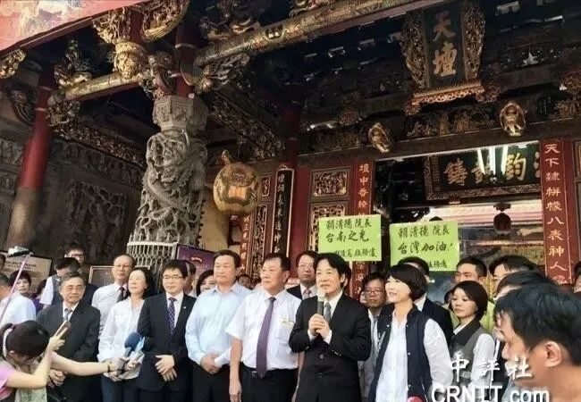
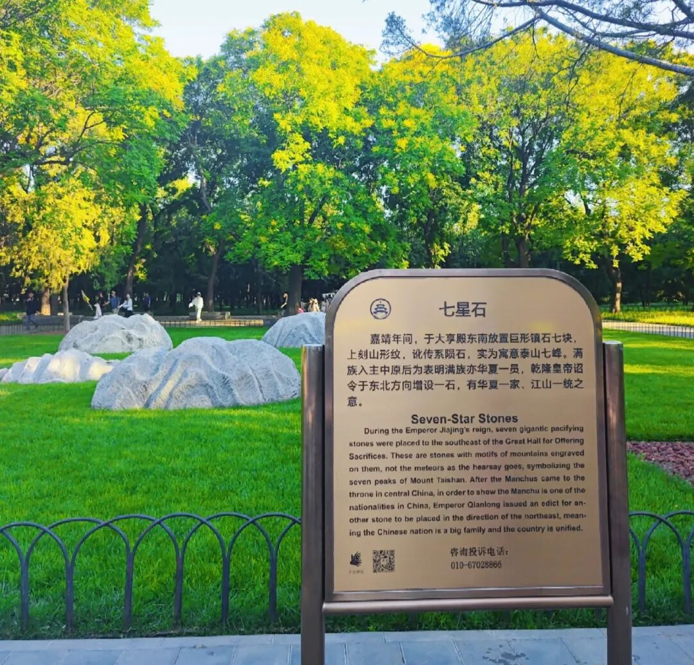

如果不能宣布赢，就不会让来。
如果不能宣布赢，就不来了。
这次来不敢吵架，时移而势易。
单赢是不可能的，只能是双赢。
就来两天，技术内容都谈差不多了，还在仁川机场做了确认，肯定有宣布赢的基础。剩下的分歧现场拍板。最终肯定还有分歧，但不影响可以宣布赢的那些部分。
除了工作，还有生活，但生活其实也是工作。如果是同游天坛，似乎开创先例。之前尼克松和福特参观过，但没有同游过。
《大明会典》最早规定了外国使节参观天坛的制度："特许其使臣同书状官及从人二三名，于郊坛及国子监游观，礼部劄委通事一员伴行，拨馆夫防护，以示优异云"。当时是对朝鲜使节的特殊优待。
天坛是进行历史文化教育的好地方。
比如，
海峡对岸也有个“天坛”，郑成功收复台湾后在台南立的。现在每年都还在祭拜，既拜天公，也拜郑成功。连数典忘祖的赖清德也不得不去祭拜。“天坛是台湾的信仰中心”，这话是赖清德说的。

又如，
乾隆下诏在天坛“七星石”的基础上增设一石，寓意“华夏一家、江山一统”。

去春游怎么能白游呢？写读后感是必须的。历史悠久就是好，时时处处都可以用来搞教育。回去以后，就可以宣布，“没人比我更懂天坛”了。
就是这两天有点热，都要34度了，老天爷也是，热情似火。
以上。
既要工作，也要生活，欢迎加入作者的知识星球！